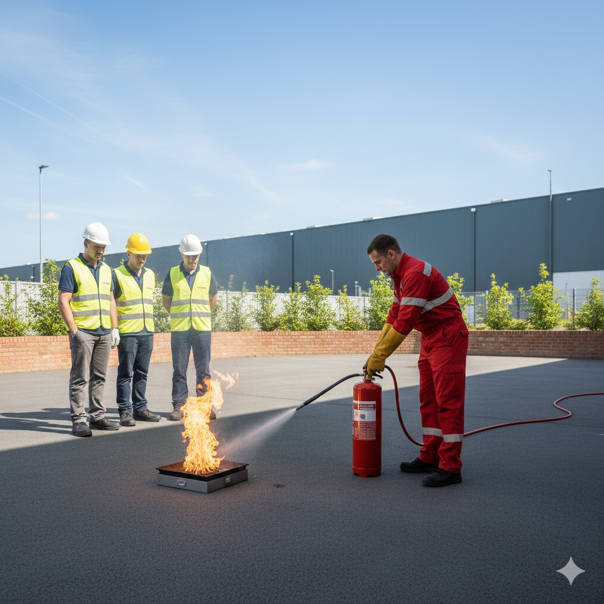

Comprehensive fire safety training delivered on-site at your workplace across the UK
Accomplished Training Solutions delivers comprehensive fire safety training courses across the whole of the UK. All our fire safety courses meet current UK fire safety legislation requirements including the Regulatory Reform (Fire Safety) Order 2005. We bring expert training directly to your workplace, saving time and reducing costs.
Our experienced trainers provide practical, engaging courses that ensure your team understands fire safety procedures, emergency evacuation protocols, and their responsibilities in preventing and responding to fire emergencies. Certificates are issued on the same day of training completion.

Our Fire Warden Training course provides designated fire wardens with the essential knowledge and practical skills to fulfill their fire safety responsibilities. This half-day course covers everything needed to effectively manage fire safety in the workplace.
This course is essential for designated fire wardens, fire marshals, health and safety officers, and any employee with fire safety responsibilities. Every workplace should have trained fire wardens on each floor or in each department.
Our comprehensive Fire Marshal Training course provides in-depth knowledge for those taking senior responsibility for fire safety. This full-day course builds on fire warden training with additional leadership and management responsibilities.
Ideal for senior fire marshals, facilities managers, health and safety managers, building managers, and those with overall responsibility for fire safety management in larger premises or multi-floor buildings.

Our Fire Safety Awareness Training is available as a full day or half day course, both including practical live extinguisher discharge training. Whether you need to train designated fire marshals and wardens or raise general awareness across your whole team, we have a course to suit your needs.
Essential for all employees, new starters requiring induction training, office staff, retail workers, and anyone working in a shared building. This training helps fulfill your legal duty to provide fire safety information to all staff.
Stay compliant and avoid enforcement notices and fines with a professional fire risk assessment carried out by our expert team. Under the Regulatory Reform (Fire Safety) Order 2005, every non-domestic premises must have a suitable and sufficient fire risk assessment — we make the process simple and straightforward.
Failure to have a fire risk assessment in place can result in enforcement notices, prohibition notices, and significant fines. Our assessments give you the peace of mind that your premises, staff and visitors are protected — and that you're fully compliant with current UK fire safety legislation.
Our Fire Evacuation Chair Training is delivered on your premises, using your own evacuation chair. This ensures your staff are fully trained and confident with the exact equipment they will be using in an emergency, rather than an unfamiliar model.
Essential for fire wardens, marshals, reception staff, facilities teams, and any employee who may be called upon to assist with the evacuation of a colleague or visitor with a mobility impairment. Training takes place on-site using your own chair.
All courses meet UK fire safety legislation and regulatory requirements
Our trainers have extensive fire safety experience and qualifications
We come to your workplace anywhere in the UK with all equipment provided
Hands-on fire extinguisher training and real-world scenarios included
Training dates to suit your business operations and requirements
We tailor our courses to your specific industry, workplace and team requirements
Get a free quote for on-site fire safety training at your workplace. Group discounts available.
Get a Free QuoteFor designated Fire Wardens, specialized training must be renewed annually. General employee Fire Safety awareness training is typically conducted every 12-18 months.
The Fire Warden (or Fire Marshal) is responsible for ensuring the orderly and safe evacuation of their designated area, performing a sweep of the area, and assisting with the head count at the assembly point.
Fire doors are a critical safety feature. They are designed to compartmentalize the building and stop the spread of fire and smoke for a specified period, giving people more time to escape. Never prop them open.
We deliver training at: